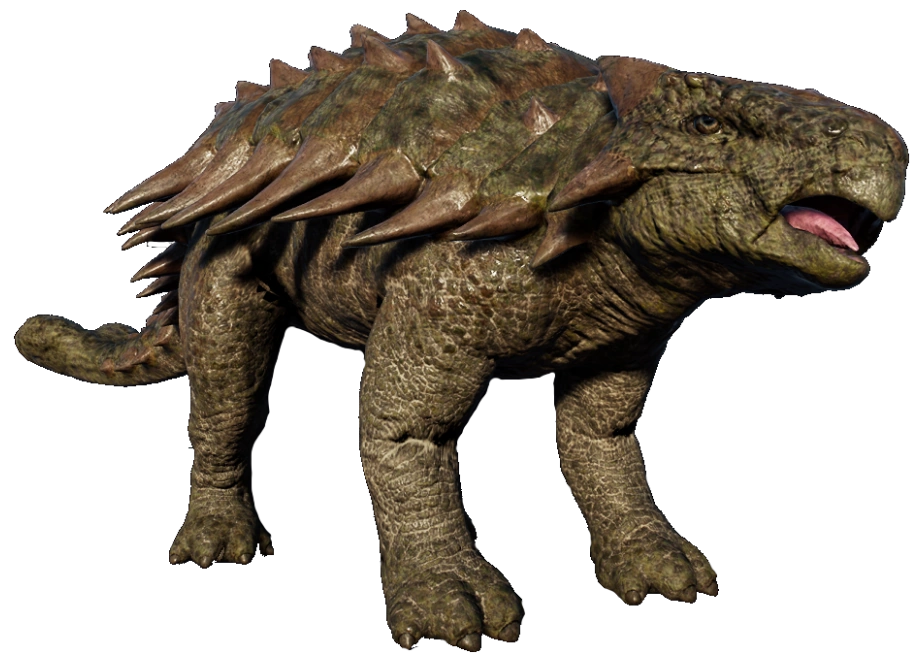
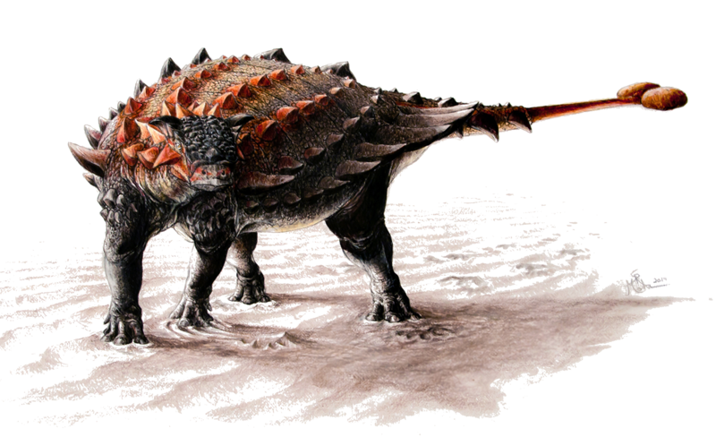

Ankylosaurus
Ankylosaurus is a genus of herbivorous, four-legged, heavily armored dinosaur from the Late Cretaceous period. Its unique features include a broad, robust body covered in bony plates for protection and a large club-like tail used for defense. Fossils of this dinosaur have been primarily found in western North America, specifically in the Hell Creek Formation, Scollard Formation, and Lance Formation. They hail from the Maastrichtian age, dating back to approximately 68 to 66 million years ago.
Cyrannian, jurassicworld-evolution.fandom.com
{kind=link}
Ankylosaurus, one of the last dinosaur genera that appeared before the end of the Mesozoic Era, was first discovered in 1906 by Barnum Brown in the Hell Creek Formation in Montana. The initial find consisted of several skull fragments, a femur, and some armored plates. Brown also uncovered a second specimen in 1910, a partial skeleton that provided a more comprehensive picture of the creature. These fossils have given us great insight into the features and lifestyle of this heavily armored herbivore.
Sydney Mohr, wikipmedia.org
{kind=link}